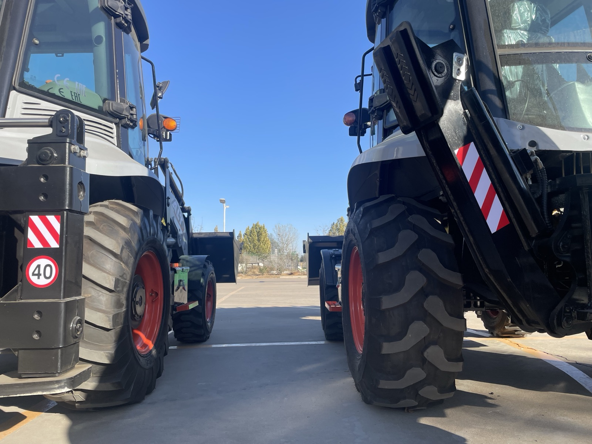
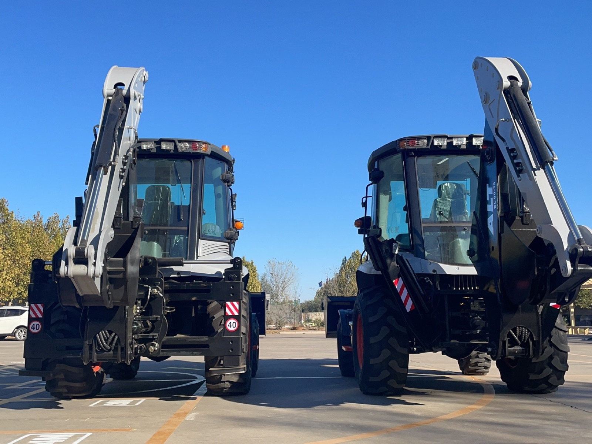

Two rear legs, two design philosophies. Left: an H-type (vertical) stabilizer, folded flat against the chassis. Right: an A-type (angled) leg with its cylinder, which swings outward and lands its pad outside the wheels. Same model, same yard, same day.
The Whole Trade, in One Diagram
Everything about this choice comes down to one word: footprint — the shape your four ground-contact points (two wheels, two pads) draw on the ground while digging. That shape is the machine's support polygon, and every digging force tries to push the center of gravity outside it.
Same machine, two support polygons. When the backhoe swings a loaded bucket sideways, the force tries to rotate the machine about its rear axle — a wider polygon simply has more room for that moment to be absorbed before something lifts.
Here is the whole trade in one paragraph. When the bucket pulls sideways — swinging a loaded bucket from trench to spoil pile — the machine wants to pivot about the rear axle. How much sideways force it resists depends on how far the outer support points sit from that tipping line. The A-type's pads land outside the wheels, so its polygon is wider and the machine feels planted when the swing is aggressive. The H-type's pads land at track width, so its polygon is narrower — but the legs themselves stay inside the machine's outline, which is exactly what you need when the machine has to work where space is the scarce resource. One layout buys stability with space; the other buys space with stability. Nothing is free; the question is which resource your sites run out of first.
What the Stabilizers Actually Do
Before comparing the two layouts, it helps to be precise about the job. A backhoe loader is a machine that works in two opposite directions: the front end loads, the back end digs. When the backhoe pulls a full bucket out of the ground, it is trying to tip the machine over backward and sideways at the same time. The rear axle and its tires alone cannot resist that — tires flex, suspension moves, and the tipping line runs right through the rear wheels.
The stabilizers change the geometry. Lowered onto the ground, they extend the machine's support base behind and beside the rear axle, anchor the back end, and take the dig out of the tires. On a hard-standing site with the legs down, a backhoe loader is a remarkably steady digging platform; with the legs up, it is a wheeled loader with a lever bolted to its back. If you want the full picture of how the two ends share one chassis, I wrote a separate piece on how a backhoe loader works — this article stays focused on those two rear legs and the shapes they come in.
Two Layouts, One Photograph

The same model, two ways. Look behind the rear wheels: the left machine's legs sit nearly flush with the body, while the right machine's legs angle outward and would land their pads wider than the tires.
The names are not marketing. They describe the shape the two legs and the chassis make.
H-type stabilizers (you will also see them called vertical, straight, or parallel-drop legs) move essentially straight down from the sides of the chassis. Lowered, each pad lands roughly at the machine's track width — inside or level with the wheels. Folded, the legs hug the body. Seen from the rear with both legs down, the two vertical legs plus the axle line between them sketch out something like the letter H.
A-type stabilizers (angled, splayed, or A-frame legs) pivot outward and down. The leg starts high on the chassis and swings out as it descends, so the pad lands outside the wheels. From the rear, the two legs form an upside-down V — the A. The hydraulic cylinder usually runs along the leg, which is what you can see in the photo above on the right-hand machine.
Neither layout is "the new one" or "the old one" — both have been built for decades, and both are still in production around the world, because each is genuinely better at a different job. What follows is what each one trades away and what each one buys you.
Where the H-Type Is the Right Answer
The H-type earns its living in the places where the machine barely fits.
- Urban utility and municipal work. Water lines, gas lines, cable trenches along streets with parked cars, walls, fences and barriers on both sides. A leg that swings out past the tires needs that space to be empty; a vertical leg does not.
- Digging close to structures. Along a foundation wall or inside a compound gate, the working envelope is defined by the machine's own width. Vertical legs keep the effective digging width equal to the track width.
- Frequent repositioning in tight quarters. Fold-up, creep forward two meters between a fence and a pile of pipe, fold down again. Vertical legs make this rhythm fast because the legs never swing into anything.
- Side-shift backhoes. On machines where the whole backhoe slides sideways across the chassis, vertical legs keep the rear structure and its hydraulics simple and clean — one reason many side-shift machines run vertical legs as standard.
- Transport width discipline. Folded, the legs add essentially nothing to the machine's width, which matters when the machine moves between sites on a truck through narrow streets, or travels between islands on a small ferry.
If that list describes most of your work, the H-type is not the compromise choice — it is the correct one.
Where the A-Type Is the Right Answer
The A-type is at its best where there is room to open up and the ground is not polite.
- Open-site excavation with long production digs. Roadside drainage, irrigation channels, foundation mass-digs — anywhere the machine parks and digs for hours. The wider polygon pays you back all day in how steady the boom feels with a full bucket at full reach.
- Breaker and heavy-attachment work. A hydraulic hammer sends shock sideways and down in irregular pulses. Extra stance width is exactly what you want under a machine that is being shaken for hours.
- Uneven or sloped ground. Because each leg swings on its pivot, the two sides can be set at different heights to square the machine up across rough ground — the layout tolerates imperfection better.
- Working across a shallow trench line or depression. The splayed legs can often be set so the pads land on solid ground past the depression, instead of perched on its crumbling edge.
- Soft ground, with pads. Landing the pads wider, on larger support pads or timber mats, spreads the load where a vertical leg would gradually punch into the same soil.
Notice what is not on this list: working in a narrow street. That is not an oversight — that is the trade.
Pads, Ground Pressure and the Rules That Apply to Both
Whichever layout you choose, the legs are only as good as what they stand on. A few rules that do not change with the letter on the leg:
- Pads are not optional equipment. The standard foot plate is fine on compacted ground. On soft soil, wet clay or fresh backfill, put timber mats or steel pads under the feet — the goal is for the pad to sit on ground that does not move when loaded. Digging with a leg sinking is how machines go over.
- Fully seat the legs before digging. A leg touching the ground is not the same as a leg carrying load. Lower until the rear tires visibly lighten or just lift, then dig. If the tires stay fully loaded, the legs are decoration.
- Respect the edge. Setting pads near an open excavation edge loads that edge — the ground between pad and trench can shear. Keep pads back or consult the site's ground rules; this is basic excavation safety, and it applies to a 2-ton mini just as much as a 9-ton machine.
- Watch the cylinders after the first hour. A leg that slowly sinks while working usually means an internal seal passing oil, not an operator error. Flag it early — it is a cheap fix on the bench and an expensive lesson in a trench. The same habit of catching small hydraulic leaks early is covered in my maintenance checklist.
- Teach the fold-and-go habit. Most stabilizer damage happens in transport — legs left down, clip a gatepost, bend a cylinder. Folding the legs fully before moving is a two-second habit that protects the most-used hydraulics on the machine.
More of these habits, from daily checks to the monthly list, are in my article on backhoe loader maintenance, and the lifting-and-tipping side is covered in the piece on backhoe loader safety.
How We Build Them — and the Honest Price Logic
On our own line, most BL-series machines leave the factory with vertical (H-type) legs as standard, and we build the A-type layout on the same chassis — the two machines in the photographs are the same model. On the BL80-25 option list, the A-frame layout is actually a price deduction, not an upgrade fee. I want to be honest about why, because buyers sometimes read "cheaper" as "worse."
The reason is structural simplicity. An angled leg hangs on a pivot and its cylinder does more of the work along a direct line — a straightforward, material-light way to build the rear frame. A vertical leg takes load on a short lever right beside the chassis, so the leg housing and its mounting structure have to be built heavier to carry the same dig. More steel, more machining, more cost — that is the whole story. The deduction tells you about manufacturing cost, not about which layout will make you more money. That depends entirely on your sites, and no option list can know your sites.
So when a customer asks me "which one should I tick?", I ask them to describe where the machine will spend its days. Street work and utilities in a dense city → vertical legs, and maybe consider the side-shift option too. Open farmland, road crews, breaker work → the A-frame, and spend part of what you saved on proper pads. Mixed fleet for rental → look at where your previous machines struggled, because your rental history already knows the answer. If you are weighing the whole machine rather than just the legs, my configuration guide walks through the same matching logic for engines, axles and attachments.
Five Questions to Ask Before You Choose
- Where does the machine dig, physically? Name the three most common job sites. Street with barriers → H-type. Open field or road corridor → A-type. Genuinely mixed → let the majority decide, because no layout is good at the minority case.
- How wide is the narrowest gate or lane it must serve? Measure it. Then ask the supplier for the machine's working footprint drawing — legs down — not just the transport width. A machine that fits through the gate has passed the access check, not the digging-position check.
- Is there a side-shift requirement? If your operators dig against walls and expect to slide the backhoe rather than reposition, confirm with the supplier that the stabilizer layout and the side-shift frame work together cleanly on that specific model.
- What ground do the pads land on? Soft ground most of the year → budget for pads or mats from day one regardless of layout, and ask the factory about pad options and ground pressure.
- What does the option sheet say — and why? If one layout is a price deduction, ask what that reflects. The honest answer, as above, is usually structure and steel, not quality. A supplier who can explain the cost logic of their own option list is a supplier worth having.
And one request I make of every buyer comparing factories: ask each of us for a photo of the machine's rear with the legs down on the ground, not folded in the brochure pose. The legs are easy to photograph and hard to fake, and comparing the layout side by side settles more arguments than any spec table. The weight-and-dimensions numbers behind those drawings are covered in my piece on backhoe loader weight and specifications.
The Short Version
H-type legs work where the machine barely fits and fold away to nothing; they trade some lateral stability for that discipline, and they pair naturally with side-shift backhoes. A-type legs open the machine's stance past its own wheels — steadier under the boom, happier on rough and soft ground, and hopeless in a narrow street. Neither is the better leg. Each is the better leg for a specific yard.
If you tell me where your machines actually work — the streets, the sites, the ground — I will tell you which layout I would put on your truck, and I will tell you if the answer is "neither matters much for your case," which is also a real answer that saves you worry.
Not Sure Which Layout Fits Your Sites?
Send me a photo of a typical job site, or just describe where the machine will dig — streets or open ground, soft or hard, rental or own fleet. I will tell you which stabilizer layout I would specify, and why, before any talk about price.
Talk to Vivian on WhatsApp